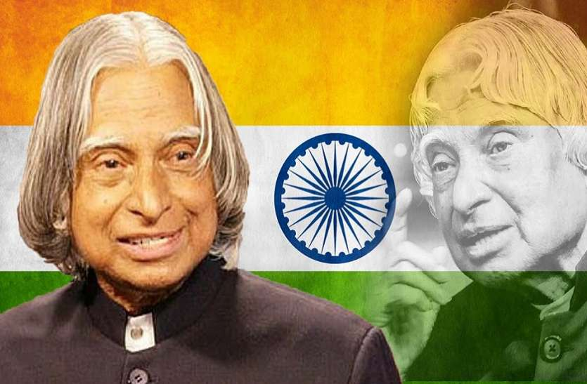

DR. A.P.J Abdul Kalam
The Missile Man of India

The 11th President of India from 2002 to 2007.
A career scientist turned statesman, Kalam was born and raised in Rameswaram, Tamil Nadu, and studied physics and aerospace engineering.
He spent the next four decades as a scientist and science administrator, mainly at the Defence Research and Development Organisation (DRDO) and Indian Space Research Organisation (ISRO) and was intimately involved in India's civilian space programme and military missile development efforts.
He thus came to be known as the Missile Man of India for his work on the development of ballistic missile and launch vehicle technology. He also played a pivotal organisational, technical, and political role in India's Pokhran-II nuclear tests in 1998, the first since the original nuclear test by India in 1974.